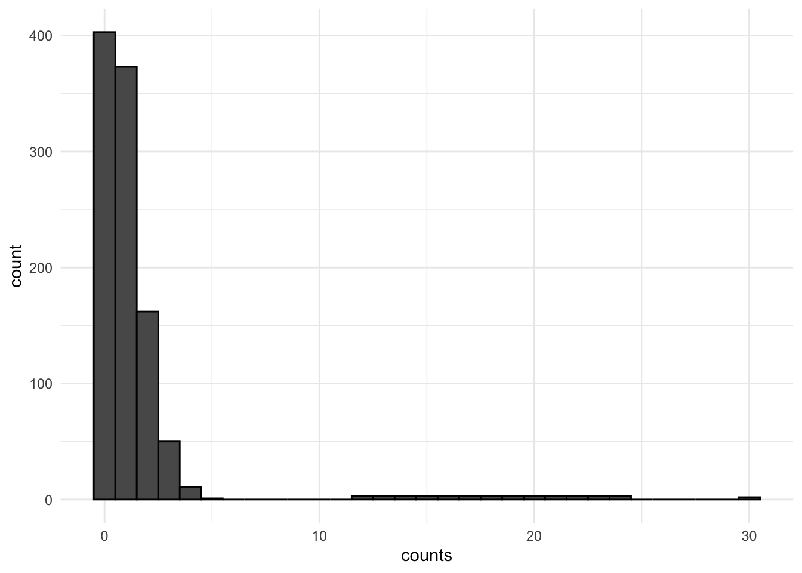

Y <- rpois(n=30, lambda = 2)
Y [1] 2 1 3 3 3 2 1 2 3 1 4 2 1 1 2 2 3 1 3 1 0 3 5 4 2 2 2 5 0 0In this section, we will talk about models that are appropriate for estimating outcomes that are structured as “count data”– non-negative integer data.
The key characteristics of count data are:
The following supplemental resources may be useful:
Many of our dependent variables in social science may be considered counts:
Each of these variables shares the features that they are discrete and range from 0 to some positive number.
Example: Your outcome data might look like this, where each \(i\) observation represents a count of some kind:
Y <- rpois(n=30, lambda = 2)
Y [1] 2 1 3 3 3 2 1 2 3 1 4 2 1 1 2 2 3 1 3 1 0 3 5 4 2 2 2 5 0 0A common way one might approach modeling data of this type is to use OLS to estimate a linear model. After all, the data seem quasi-continuous! Sometimes, this might be just fine, but let’s think about some situations where this could go awry.
Below is an example of this type of skew, sparsity, and clustering toward 0.

For more information on dealing with skewed data and non-normal errors in linear regression, see Chapter 12.1 posted on Canvas from the Fox textbook.
So we are left unsatisfied with a linear model for our count data. What do we do? Fortunately, there are multiple probability distributions that may be appropriate for the data generating process that generates counts, which we can use maximum likelihood to estimate. Since we have been in Bernoulli world for a while, let’s refresh on the steps we consider when approaching a potential maximum likelihood problem.
The first probability distribution we will consider is the Poisson. This is a discrete distribution (so we are in pmf instead of pdf territory). Let’s go step-by-step.
We assume no two events occur at the same time. We also assume the probability of an event occurring at a particular time is not a function of the previous events. Events happen independently. Sometimes the occurrence of an event makes the occurrence of a subsequent event less or more likely. This would be a violation and suggestive of overdispersion, which we will return to later.
Recall that in a normal distribution, we needed two parameters \(\mu\) and \(\sigma^2\), to describe the shape of a normally distributed variable– the mean and variance of a normally distributed outcome.
In the Poisson case, the shape of our distribution is defined by the single parameter \(\lambda\). A special feature of the Poisson probability distribution is that \(\lambda\) is both the parameter for the mean \(\mathbf E(Y) = \lambda\) and the variance \(\mathbf V(Y) = \lambda\).
Let’s look at an example of Poisson data to prove to ourselves that if data are Poisson the mean and variance are equivalent:
## We use rpois() to generate some count data according to the Poisson distribution.
## Let's specify lambda = 4
## This means the mean of the distribution will be 4 and the variance will be 4
## In any given sample, it might be slightly off from this
Y <- rpois(n=100000, lambda = 4)
mean(Y)[1] 4.0099var(Y)[1] 4.035322The pmf above describes the probability that Y takes a particular outcome.
## For example given a Y ~ Pois(lambda = 4), let's look at the probability of getting particular counts using dpois, the pmf function for poisson
counts <- 0:16
probs <- dpois(counts, lambda = 4)
names(probs) <- counts
round(probs, digits=3) 0 1 2 3 4 5 6 7 8 9 10 11 12
0.018 0.073 0.147 0.195 0.195 0.156 0.104 0.060 0.030 0.013 0.005 0.002 0.001
13 14 15 16
0.000 0.000 0.000 0.000 ## The probability is higher the closer we are to 4, the mean of the distribution
## Let's check our formula from above for the probability Y = 2
lambda <- 4
yi <- 2
dpois(yi, lambda=4)[1] 0.1465251## formula from above
exp(-lambda)*lambda^yi/factorial(yi)[1] 0.1465251The expected count here is 4, the mean of the distribution. The probability of any given count is specified according to the pmf above.
Adding covariates
In regression, we will consider \(\lambda\) (the expected count) to be a function of \(\mathbf x_i'\beta\), and we will try to estimate our outcome \(\mathbf E(Y_i | \mathbf x_i)\) given values of \(\mathbf x_i\).
However, just like in the logit/probit case, our parameter \(\lambda \neq \mathbf x_i'\beta\). Instead, it is a nonlinear function of \(\mathbf x_i'\beta\). Here, we just have a different link function. Specifically,
Analogy: Recall, in the Bernoulli case, we had just the parameter \(\pi\), which described the expected probability of success given there is just one trial. Recall, in logistic regression \(\pi_i = \frac{exp(\mathbf x_i^T\beta)}{1 + exp(\mathbf x_i^T\beta)}\). Here, the transformation is just a different link function.
OK, if we are using the existing functions in R, we can essentially stop here and proceed to glm (yes, we get to use our glm friend again). But, let’s look at the likelihood to finish out the process.
This is just that pmf from above. For now, we will just write \(\lambda\), but we know eventually we will need to substitute it with our expression \(\lambda_i = exp(\mathbf x_i^T\beta)\).
\[\begin{align*} \mathcal L(\beta |Y_i)=\Pr(Y=Y_i|\lambda) \end{align*}\]Here, we need to multiply across all observations. To do this, we are assuming independence.
\[\begin{align*} \mathcal L(\beta |Y)&=\mathcal L(\beta|Y_1)\times\mathcal L(\beta|Y_2)\times \ldots \times \mathcal L(\beta|Y_{n})\\ \mathcal L(\beta|Y)&=\prod_{i=1}^N\mathcal L(\beta|Y_i)\\ &= \prod_{i = 1}^{N}\frac{1}{Y_i!}\lambda_i^{Y_i}\exp(-\lambda_i) \end{align*}\]We’ve seen this party trick before. Taking the \(\log\) gives us the sums:
\[\begin{align*} \mathcal l(\beta|Y)&=\sum_{i=1}^N\mathcal \log(\mathcal L(\beta|Y_i))\\ &= \sum_{i = 1}^{n}\log(\frac{1}{Y_i!}\lambda_i^{Y_i}\exp(-\lambda_i))\\ &= \sum_{i = 1}^{n}\log (\frac{1}{Y_i!}) + Y_i\log(\lambda_i) - \lambda_i\\ &= \sum_{i = 1}^{n}Y_i\mathbf x_i^\top\beta - \exp(\mathbf x_i^\top\beta) - \log(Y_i!) \end{align*}\]Oof, this is where we take the derivative to find the \(S(\theta)\).
This will not yield a closed form solution for \(\hat \beta\) when setting it to zero. Instead, we have to use numerical methods to estimate the parameters (e.g., think optim).
The good thing is that now that we have taken the first derivative, we can take the second derivative to find the Hessian, which will allow us to estimate uncertainty.
\[\begin{align*} &= - \sum_{i = 1}^{n} \mathbf x_i\mathbf x_i'\exp(\mathbf x_i^\top\beta)\\ &= - X^TVX \text{ where } V = n \times n \text{ diagonal matrix of } \exp(X\beta) \end{align*}\]Note this is the \(k \times k\) matrix!
vcov(fit) in the Poisson caseOK, let’s start translating this math into R.
We will use the following article for our motivating example: “Legislative Capacity and Executive Unilateralism” by Alex Bolton and Sharece Thrower, which was published in the American Journal of Political Science in 2015.
Abstract. This article develops a theory of presidential unilateralism in which both ideological divergence with Congress and legislative capacity influence the president’s use of executive orders. We argue that when Congress is less capable of constraining the executive, the president will issue more executive orders during periods of divided government. Conversely, in periods of high legislative capacity, the president is less likely to issue executive orders when faced with an opposed Congress. Based on an examination of institutional changes, we identify years prior to the mid‐1940s as characterized by low congressional capacity and the subsequent period as characterized by high capacity. Testing the theory between 1905 and 2013, we find strong support for these predictions and demonstrate that legislative capacity conditions the role of ideological disagreement in shaping presidential action. Overall, this article deepens our current understanding of the dynamics of separation‐of‐powers politics and the limits of executive power.
The primary research question: Is the president constrained by an ideologically opposed Congress? The authors explore how the number of executive orders made per year varies acording to whether the government is divided or unified.
allnoncerm_eo, all non-ceremonial executive orders in a yeardivided, whether or not there was divided government, where the president and the majority party in either the House or Senate are different partiesLet’s load the data and look at the outcome variable.
library(foreign)
bolton <- read.dta("https://github.com/ktmccabe/teachingdata/blob/main/bt.dta?raw=true")
table(bolton$allnoncerm_eo)
20 26 30 31 34 35 37 38 39 40 41 42 43 45 48 49 50 52 53 54
1 2 1 2 2 2 3 1 1 1 3 2 1 4 2 3 1 2 2 2
55 56 57 61 63 64 65 66 68 69 70 71 72 75 76 78 85 92 96 97
1 1 3 1 1 2 1 2 2 1 2 1 1 1 1 1 1 1 1 1
98 112 116 117 120 146 164 172 188 200 212 219 225 232 241 247 250 253 265 267
2 1 1 1 1 1 2 1 1 1 1 1 2 1 1 3 1 1 1 1
273 286 287 303 305 307 309 315 319 328 338 339 345 358 382 393 438 471 473 501
1 1 1 1 1 1 1 1 1 1 1 1 1 1 1 1 1 1 1 1 Often for count variables, it can be useful to visualize them in a histogram. Here is a ggplot version.
library(ggplot2)
ggplot(bolton, aes(allnoncerm_eo))+
geom_histogram(binwidth = 5)+
theme_minimal()The authors distinguish time pre- and post-1945 based on different levels of Congressional capacity. We can look at how the outcome changed over time and note how there were far more executive orders in the earlier period.
plot(x=bolton$year, y=bolton$allnoncerm_eo, pch =20,
main = "Executive Orders by Year",
cex.main = .8,
ylim = c(0, 500))
abline(v=1945, lty =2) # vertical line at 1945We will investigate the relationship between divided government and executive orders in the first time period.
The authors’ hypothesize, “During periods of low legislative capacity (prior to the mid-1940s), the president issues more executive orders under divided government.
To fit a Poisson model in R, we use the glm function. However, now we have a different family= "poisson" and link = "log". We don’t actually have to explicitly write the link because R will use this link by default.
Let’s fit a regression of our outcome on the key explanatory variables, along with other controls the authors use. Note that because I want the early period, I have to subset the data. I can do this outside, prior to the regression. Or, I can subset in the data argument, as is done in the below code:
fit <- glm(allnoncerm_eo ~ divided + inflation +
spending_percent_gdp + war + lame_duck +
administration_change + trend +
+ tr+ taft + wilson + harding
+ coolidge + hoover,
family = "poisson",
data = subset(bolton, year < 1945))The summary output for Poisson is much nicer than the multinomial output we were working with previously. Let’s extract just the divided coefficient output from the summary.
summary(fit)$coefficients[2,] Estimate Std. Error z value Pr(>|z|)
4.435893e-01 4.195090e-02 1.057401e+01 3.933025e-26 How should we interpret this coefficient?
For every one-unit change in \(x\), we estimate an average \(\hat \beta\) change in the \(\log\) of the expected executive orders, holding the other covariates constant.
Our primary quantity of interest is the expected count, in this case the expected number of executive orders, given certain values of the covariates
\(\mathbf E(Y | X) = \lambda = exp(\mathbf x_i' \beta)\)
Like other glm models, we can also use predict to do this for us by setting type = response or prediction.
avg_predictions or prediction.X <- model.matrix(fit)
X[, "divided"] <- 0
B <- coef(fit)
eta <- X %*% B
expcount <- exp(eta)
avg.exp.count.0 <- mean(expcount)
avg.exp.count.0 [1] 265.7753X <- model.matrix(fit)
X[, "divided"] <- 1
B <- coef(fit)
eta <- X %*% B
expcount <- exp(eta)
avg.exp.count.1 <- mean(expcount)
avg.exp.count.1[1] 414.1552From marginaleffects
library(marginaleffects)
avg.exp.counts.me <- avg_predictions(fit,by="divided",
newdata= datagridcf(divided=c(0,1)), type="response")
avg.exp.counts.me
divided Estimate Std. Error z Pr(>|z|) S 2.5 % 97.5 %
0 266 2.86 92.9 <0.001 Inf 260 271
1 414 15.76 26.3 <0.001 503.2 383 445
Columns: divided, estimate, std.error, statistic, p.value, s.value, conf.low, conf.high
Type: response From Thomas Leeper
library(prediction)
avg.exp.counts <- prediction(fit, at=list(divided=c(0, 1)), type = "response")
summary(avg.exp.counts) at(divided) Prediction SE z p lower upper
0 265.8 2.862 92.85 0.000e+00 260.2 271.4
1 414.2 15.759 26.28 3.224e-152 383.3 445.0We can also find the differences in expected counts by subtracting the above estimates from each other, or computing this directly through avg_comparisons or margins:
avg.exp.count.1 - avg.exp.count.0[1] 148.3798library(marginaleffects)
avg.diff.me <- avg_comparisons(fit, variables=list(divided=c(0,1)), type="response")
avg.diff.me
Term Contrast Estimate Std. Error z Pr(>|z|) S 2.5 % 97.5 %
divided 1 - 0 148 16.7 8.9 <0.001 60.6 116 181
Columns: term, contrast, estimate, std.error, statistic, p.value, s.value, conf.low, conf.high
Type: response library(margins)
avg.diff <- margins(fit, variables="divided", change = c(0, 1), vce = "delta")
summary(avg.diff) factor AME SE z p lower upper
divided 148.3798 16.6768 8.8974 0.0000 115.6938 181.0658Just like in logit and probit, we have the same options for calculating uncertainty: Delta Method, Simulation, and Bootstrap.
For Poisson, changes in \(x\) will have a multiplicative change in \(y\):
Recall a math rule for exponents to follow the below: \(z^{a+b} = z^a * z^b\)
\[\begin{align*} \mathbf E(Y | X) &= e^{\alpha + x_1 \beta_1 + x_2 \beta_2}\\ &= e^{\alpha} * e^{x_1 \beta_1} *e^{x_2 \beta_2} \end{align*}\]For example, compare \(x_1\) to \(x_1 + 1\)
\[\begin{align*} \mathbf E(Y | X) &= e^{\alpha + (x_1 + 1) \beta_1 + x_2 \beta_2}\\ &= e^{\alpha} * e^{x_1 \beta_1}* e^{\beta_1} *e^{x_2 \beta_2} \end{align*}\]We’ve now multiplied the outcome by \(e^{\beta_1}\).
Here’s an example using a bivariate model
fit.biv <- glm(allnoncerm_eo ~ divided ,
family = "poisson",
data = subset(bolton, year < 1945))
## Let's calculate yhat using predict for divided = 0 or 1
yhats <- predict(fit.biv, data.frame(divided = c(0, 1)), type="response")
yhats 1 2
280.6471 282.8333 ## Manual
yhatx0 <- exp(coef(fit.biv)[1] + coef(fit.biv)[2]*0)
names(yhatx0) <- "when divided=0"
yhatx1 <- exp(coef(fit.biv)[1] + coef(fit.biv)[2]*1)
names(yhatx1) <- "when divided=1"
c(yhatx0, yhatx1)when divided=0 when divided=1
280.6471 282.8333 ## Multiplicative interpretation
yhatx0*(exp(coef(fit.biv)["divided"]))when divided=0
282.8333 Relatedly, similar to logistic regression where we could exponentiate the coefficients to generate estimated odds ratios, in poisson, we can exponentiate the coefficients to get “incidence rate ratios.”
When we say a one-unit change in the independent variable \(x\), this is like saying
If we exponentiate, the \(\log\) cancels to 1:
For example, the incidence rate ratio for executive orders in a year going from unified to divided government is:
exp(coef(fit)["divided"])divided
1.55829 We can see how this works out using the quantities calculated above. Multiplying the expected count when divided = 0 by this ratio gives us the expected count when divided = 1.
exp(coef(fit)["divided"])*avg.exp.count.0 divided
414.1552 avg.exp.count.1[1] 414.1552Note how this is a percent change interpretation where
((avg.exp.count.1 - avg.exp.count.0)/ avg.exp.count.0)* 100[1] 55.82903(exp(coef(fit)["divided"])-1)*100 divided
55.82903 For a one-unit change going from unified to divided government, we see a 55.8% increase in executive orders during this period.
Recall the detail when we specified the pmf, that the mean and variance at the same. When we have covariates \(X\), this means we assume the conditional mean and variance are the same:
We can investigate this in our example. First, let’s look at the raw mean and variance of the outcome.
## whoa! very different,
## but the good news is we care about the *conditional* mean and variance
## not these raw values
mean(subset(bolton$allnoncerm_eo, bolton$year < 1945))[1] 280.975var(subset(bolton$allnoncerm_eo, bolton$year < 1945))[1] 9011.256We can conduct a test of overdispersion in our model using dispersiontest. If we have a significant result and a dispersion constant \(>\) 0, this would suggest overdispersion.
library(AER)Loading required package: carLoading required package: carDataLoading required package: lmtestLoading required package: zoo
Attaching package: 'zoo'The following objects are masked from 'package:base':
as.Date, as.Date.numericLoading required package: sandwichLoading required package: survivaldispersiontest(fit)
Overdispersion test
data: fit
z = 3.6675, p-value = 0.0001225
alternative hypothesis: true dispersion is greater than 1
sample estimates:
dispersion
11.02527 To check for overdisperson, we can also look at the standardized residuals of the model.
## By hand
prvals <- predict(fit, type = "response") # predicted values
res <- subset(bolton$allnoncerm_eo, bolton$year < 1945) - prvals # residual y - predicted values
sres <- res/sqrt(prvals) # standardized residual
## automatic in R
sres <- residuals(fit,type="pearson") # automaticWe can graphically look at the standardized residuals by levels of the predicted values from our regression. Here, we don’t want residuals that exceed +/- 2.
## don't want values above 2 or below -2
plot(prvals, sres,
ylab = "standardized residuals", xlab = "predicted values")
abline(h = c(-2, 0, 2), lty = c(2, 1, 2))We are in danger!! This model suffers from overdispersion. We have two options
More on this in the next section
The quaipoisson model relaxes the assumption that the mean and variance have to be equivalent. It is the same as the Poisson but multiplies the standard errors by \(\sqrt{d}\), where \(d\) is the dispersion parameter.
These models are fit in R almost exactly the same way as poisson. We just switch family = "quasipoisson"
summary output, it lists the dispersion parameter.fitq <- glm(allnoncerm_eo ~ divided + inflation + spending_percent_gdp
+ war + lame_duck +
administration_change + trend +
+ tr+ taft + wilson + harding
+ coolidge + hoover,
family = "quasipoisson",
data = subset(bolton, year < 1945))
summary(fitq)
Call:
glm(formula = allnoncerm_eo ~ divided + inflation + spending_percent_gdp +
war + lame_duck + administration_change + trend + +tr + taft +
wilson + harding + coolidge + hoover, family = "quasipoisson",
data = subset(bolton, year < 1945))
Deviance Residuals:
Min 1Q Median 3Q Max
-8.2027 -2.4224 -0.1515 2.1532 8.9032
Coefficients:
Estimate Std. Error t value Pr(>|t|)
(Intercept) 8.0360573 0.9848054 8.160 1.22e-08 ***
divided 0.4435893 0.1727719 2.567 0.01634 *
inflation 0.0005599 0.0110836 0.051 0.96010
spending_percent_gdp -0.0286140 0.0082874 -3.453 0.00191 **
war 0.4745189 0.1936737 2.450 0.02133 *
lame_duck 0.3692336 0.2769252 1.333 0.19399
administration_change -0.0321975 0.1844677 -0.175 0.86279
trend -0.0619311 0.0316454 -1.957 0.06116 .
tr -2.5190839 0.9562064 -2.634 0.01401 *
taft -2.4104113 0.8805222 -2.737 0.01102 *
wilson -1.4750129 0.6866621 -2.148 0.04120 *
harding -1.4205088 0.4700492 -3.022 0.00558 **
coolidge -1.1070363 0.3792082 -2.919 0.00715 **
hoover -0.9985352 0.3099077 -3.222 0.00341 **
---
Signif. codes: 0 '***' 0.001 '**' 0.01 '*' 0.05 '.' 0.1 ' ' 1
(Dispersion parameter for quasipoisson family taken to be 16.96148)
Null deviance: 1281.92 on 39 degrees of freedom
Residual deviance: 439.87 on 26 degrees of freedom
AIC: NA
Number of Fisher Scoring iterations: 4The dispersion parameter is estimated using those standardized residuals from the Poisson model.
sres <- residuals(fit, type="pearson")
chisq <- sum(sres^2)
d <- chisq/fit$df.residual
d[1] 16.96146Let’s compare the Poisson and Quasipoisson model coefficients and standard errors.
round(summary(fit)$coefficients[2,], digits=4) Estimate Std. Error z value Pr(>|z|)
0.4436 0.0420 10.5740 0.0000 round(summary(fitq)$coefficients[2,], digits=4) Estimate Std. Error t value Pr(>|t|)
0.4436 0.1728 2.5675 0.0163 We can retrieve the standard error from the quasipoisson by multiplication.
## Multiply the Poisson standard error by sqrt(d)
round(summary(fit)$coefficients[2,2] * sqrt(d), digits=4)[1] 0.1728Note that the standard error among the Quasipoisson model is much bigger, accounting for the larger variance from overdispersion.
Another model commonly used for count data is the negative binomial model. This is the model Bolton and Thrower use. This has a more complicated likelihood function, but, like the quasipoisson, it has a larger (generally, more correct) variance term. Analogous to the normal distribution, the negative binomial has both a mean and variance term parameter.
\(\Pr(Y=y) = \frac{\Gamma(r+y)}{\Gamma(r) \Gamma(y+1)} (\frac{r}{r+\lambda})^r (\frac{\lambda}{r+\lambda})^y\)
Note that while the probability distribution looks much uglier, the mapping of \(\mathbf x_i' \beta\) is the same. We will still have a \(\log\) link and exponeniate to get our quantities of interest. The mechanics work essentially the same as the poisson.
In R, we use the glm.nb function from the MASS package to fit negative binomial models. Here, we do not need to specify a family, but we do specify the link = "log".
library(MASS)
fitn <- glm.nb(allnoncerm_eo ~ divided + inflation +
spending_percent_gdp + war + lame_duck +
administration_change + trend +
+ tr+ taft + wilson + harding
+ coolidge + hoover,
link="log",
data = subset(bolton, year < 1945))
summary(fitn)$coefficients[2,] Estimate Std. Error z value Pr(>|z|)
0.442135921 0.141831942 3.117322607 0.001825017 Compare this to column 1 in the model below.
We have now replicated the coefficients in column 1 of Table 1 in the authors’ paper. Our standard errors do not match exactly because the authors use clustered standard errors by president. Moreover, given a relatively small sample the two programs R (and Stata, which the authors use) might generate slightly different estimates.
Let’s reproduce column 2 from Table 1 in the article and related estimates.
\[ \begin{aligned} \log ({ E( \operatorname{allnoncerm_eo} ) }) &= \alpha + \beta_{1}(\operatorname{divided})\ + \\ &\quad \beta_{2}(\operatorname{inflation}) + \beta_{3}(\operatorname{spending\_percent\_gdp})\ + \\ &\quad \beta_{4}(\operatorname{war}) + \beta_{5}(\operatorname{lame\_duck})\ + \\ &\quad \beta_{6}(\operatorname{administration\_change}) + \beta_{7}(\operatorname{trend})\ + \\ &\quad \beta_{8}(\operatorname{truman}) + \beta_{9}(\operatorname{ike})\ + \\ &\quad \beta_{10}(\operatorname{jfk}) + \beta_{11}(\operatorname{lbj})\ + \\ &\quad \beta_{12}(\operatorname{nixon}) + \beta_{13}(\operatorname{ford})\ + \\ &\quad \beta_{14}(\operatorname{carter}) + \beta_{15}(\operatorname{reagan})\ + \\ &\quad \beta_{16}(\operatorname{bush41}) + \beta_{17}(\operatorname{clinton})\ + \\ &\quad \beta_{18}(\operatorname{bush43}) \end{aligned} \]
fit.lm <- lm(allnoncerm_eo ~ divided + inflation + spending_percent_gdp +
war + lame_duck + administration_change + trend +
truman + ike + jfk + lbj +
nixon + ford +
carter + reagan + bush41 + clinton + bush43,
data = subset(bolton, year > 1944))
fit.nb <- glm.nb(allnoncerm_eo ~ divided + inflation + spending_percent_gdp +
war + lame_duck + administration_change + trend +
truman + ike + jfk + lbj +
nixon + ford +
carter + reagan + bush41 + clinton + bush43,
link="log",
data = subset(bolton, year > 1944))
fit.qp <- glm(allnoncerm_eo ~ divided + inflation + spending_percent_gdp +
war + lame_duck + administration_change + trend +
truman + ike + jfk + lbj +
nixon + ford +
carter + reagan + bush41 + clinton + bush43,
family="quasipoisson",
data = subset(bolton, year > 1944))
## Manual
X <- model.matrix(fit.lm)
X[, "divided"] <- 1
B <- coef(fit.lm)
exp.eo.lm <- mean(X %*% B)
X <- model.matrix(fit.nb)
X[, "divided"] <- 1
B <- coef(fit.nb)
exp.eo.nb <- mean(exp(X %*% B))
X <- model.matrix(fit.qp)
X[, "divided"] <- 1
B <- coef(fit.qp)
exp.eo.qp <- mean(exp(X %*% B))
exp.eo.lm[1] 56.86582exp.eo.nb[1] 55.52576exp.eo.qp[1] 55.41505## marginal effects predictions
exp.eo.lm.me <- avg_predictions(fit.lm,by="divided",
newdata= datagridcf(divided=c(0,1)), type="response")
exp.eo.nb.me <- avg_predictions(fit.nb, by="divided",
newdata= datagridcf(divided=c(0,1)), type="response")
exp.eo.qp.me <- avg_predictions(fit.qp, by="divided",
newdata= datagridcf(divided=c(0,1)), type="response")
exp.eo.lm.me
divided Estimate Std. Error z Pr(>|z|) S 2.5 % 97.5 %
0 61.2 2.56 23.9 <0.001 417.4 56.2 66.2
1 56.9 1.94 29.3 <0.001 625.6 53.1 60.7
Columns: divided, estimate, std.error, statistic, p.value, s.value, conf.low, conf.high
Type: response exp.eo.nb.me
divided Estimate Std. Error z Pr(>|z|) S 2.5 % 97.5 %
0 62.2 2.17 28.6 <0.001 594.7 57.9 66.4
1 55.5 1.80 30.9 <0.001 692.3 52.0 59.1
Columns: divided, estimate, std.error, statistic, p.value, s.value, conf.low, conf.high
Type: response exp.eo.qp.me
divided Estimate Std. Error z Pr(>|z|) S 2.5 % 97.5 %
0 62.3 2.57 24.3 <0.001 429.7 57.3 67.3
1 55.4 2.12 26.2 <0.001 499.5 51.3 59.6
Columns: divided, estimate, std.error, statistic, p.value, s.value, conf.low, conf.high
Type: response ## Prediction
exp.eo.lm <- prediction(fit.lm, at = list(divided=1))
exp.eo.nb <- prediction(fit.nb, at = list(divided=1), type="response")
exp.eo.qp <- prediction(fit.qp, at = list(divided=1), type = "response")
summary(exp.eo.lm) at(divided) Prediction SE z p lower upper
1 56.87 1.939 29.33 4.77e-189 53.07 60.67summary(exp.eo.nb) at(divided) Prediction SE z p lower upper
1 55.53 1.799 30.86 4.027e-209 52 59.05summary(exp.eo.qp) at(divided) Prediction SE z p lower upper
1 55.42 2.117 26.18 4.395e-151 51.27 59.56These estimates are generated using the negative binomial regression models presented in Table 1. The good news is if we have followed the course notes and practice problems to this point, we have already fit both of these models.
To find the percent change, we calculate the incidence rate ratios, which represent: For a one-unit change in \(x\), the expected count changes by a factor of \(exp(\hat \beta_j)\).
confint(fit), exponentiate these, and then follow the same formula for the lower bound and upper bound. Our confidence intervals will be bigger than the authors because we used a different type of standard error.
fitn <- glm.nb(allnoncerm_eo ~ divided + inflation +
spending_percent_gdp + war + lame_duck +
administration_change + trend +
+ tr+ taft + wilson + harding
+ coolidge + hoover,
link="log",
data = subset(bolton, year < 1945))
fit.nb <- glm.nb(allnoncerm_eo ~ divided + inflation + spending_percent_gdp +
war + lame_duck + administration_change + trend +
truman + ike + jfk + lbj +
nixon + ford +
carter + reagan + bush41 + clinton + bush43,
link="log",
data = subset(bolton, year > 1944))
## Incidence Rate Ratios amd
irr1 <- exp(coef(fitn)["divided"])
irr2 <- exp(coef(fit.nb)["divided"])
ci.irr1 <- exp(confint(fitn)["divided",])Waiting for profiling to be done...ci.irr2 <- exp(confint(fit.nb)["divided",])Waiting for profiling to be done...## Percent change
pc1 <- (irr1-1)* 100
ci.pc1 <- (ci.irr1 - 1)*100
pc2 <- (irr2-1)* 100
ci.pc2 <- (ci.irr2 - 1)*100
## Prepare data for plotting
df <-data.frame(pc = c(pc1, pc2),
lower=c(ci.pc1[1], ci.pc2[1]),
upper = c(ci.pc1[2], ci.pc2[2]))
df$period <- c("Regime 1 \n 1905-1944", "Regime 2 \n 1945-2013")
ggplot(df, aes(y=pc,x=period))+
geom_bar(stat="identity")+
geom_errorbar(aes(ymin=lower, ymax=upper), width=.05)+
ggtitle("Effect of Divided Government on EO Usage")+
ylab("Percentage Change Divided Relative to Unified")+
xlab("")+
theme_minimal()
For this week’s tutorial, we will use data from the article, “Less than you think: Prevalence and predictors of fake news dissemination on Facebook” published in Science Advances by Andrew Guess, Jonathan Nagler, and Joshua Tucker available here.
Abstract.So-called “fake news” has renewed concerns about the prevalence and effects of misinformation in political campaigns. Given the potential for widespread dissemination of this material, we examine the individual-level characteristics associated with sharing false articles during the 2016 U.S. presidential campaign. To do so, we uniquely link an original survey with respondents’ sharing activity as recorded in Facebook profile data. First and foremost, we find that sharing this content was a relatively rare activity. Conservatives were more likely to share articles from fake news domains, which in 2016 were largely pro-Trump in orientation, than liberals or moderates. We also find a strong age effect, which persists after controlling for partisanship and ideology: On average, users over 65 shared nearly seven times as many articles from fake news domains as the youngest age group.
The authors look at the demographics predictors of disseminating fake news using survey data and behavioral data on respondents’ Facebook sharing history.
The key outcome variable is num_fake_shares, representing the number of articles an individual shared from a list of fake news domains created by Buzzfeed.
party,ideology (factor), age (factor), female, black, educ, faminc, num_postsLet’s load the data and look at the outcome.
library(rio)
fake <- import("https://github.com/ktmccabe/teachingdata/blob/main/sciencerep.RData?raw=true")
table(fake$num_fake_shares)
0 1 2 3 4 5 6 7 8 9 10 12 13 25 50
1090 63 12 8 5 1 1 2 1 2 2 1 1 1 1 It looks like our data are a count. Let’s try to visualize this distribution in a histogram. How would you describe this distribution?
library(ggplot2)
ggplot(fake, aes(num_fake_shares))+
geom_histogram(bins=50)+
theme_minimal()+
ggtitle("Distribution of Fake News Shares") +
ylab("Number of respondents") +
xlab("Number of fake news stories shared")library(ggplot2)
fakesub <- subset(fake, party %in% c("Democrat", "Republican", "Independent"))
ggplot(fakesub, aes(num_fake_shares, fill=party))+
geom_histogram(bins=50)+
theme_minimal()+
ggtitle("Distribution of Fake News Shares") +
ylab("Number of respondents") +
scale_fill_manual("", values = c("blue", "red", "darkgray")) +
xlab("Number of fake news stories shared") +
theme(legend.position = "bottom", legend.title = element_blank()) Warning: Removed 1499 rows containing non-finite values (`stat_bin()`).Let’s say we were interested in exploring the relationship between age and the number of fake news posts. It can always be useful to conduct more descriptive or exploratory analysis before hitting the heavy machinery. For example, the authors look at the average number of fake news posts shared by age group in Figure 2. We can do the same. Ours will look a little different because it’s unweighted:
## Base r version
meansbyage <- tapply(fake$num_fake_shares, fake$age, mean, na.rm=T)
barplot(meansbyage,
main = "Age and Fake News Shares",
ylab= "Mean number of fake news stories shared",
xlab="Age group",
ylim=c(0,.6),
col="black")## ggplot version
library(tidyverse)── Attaching packages ─────────────────────────────────────── tidyverse 1.3.1 ──✔ tibble 3.2.1 ✔ dplyr 1.1.2
✔ tidyr 1.3.0 ✔ stringr 1.5.0
✔ readr 2.1.2 ✔ forcats 1.0.0
✔ purrr 1.0.2 ── Conflicts ────────────────────────────────────────── tidyverse_conflicts() ──
✖ dplyr::filter() masks stats::filter()
✖ dplyr::lag() masks stats::lag()
✖ dplyr::recode() masks car::recode()
✖ dplyr::select() masks MASS::select()
✖ purrr::some() masks car::some()fake %>%
filter(!is.na(age)) %>%
group_by(age) %>%
summarise(mean_fakes = mean(num_fake_shares, na.rm = TRUE)) %>%
ggplot(aes(x=age, y=mean_fakes)) +
geom_bar(stat = "identity") +
ggtitle("Age and Fake News Shares") +
ylab("Mean number of fake news stories shared") +
xlab("Age group") +
ylim(0, .6)+
theme_minimal()
Recall that for our primary count models, the regression equation is of the form:
glm. Be careful to specify the right family.
We will fit a quasipoisson following the authors. Note: they apply survey weights through the weights function. You could also use the survey package for this. For now, we will follow the approach of the authors.
model1.qp <- glm(num_fake_shares ~ ideology + age + female + black + educ + faminc,
weights = weight_svypop_w3,
data = fake,
family = "quasipoisson")
summary(model1.qp)
Call:
glm(formula = num_fake_shares ~ ideology + age + female + black +
educ + faminc, family = "quasipoisson", data = fake, weights = weight_svypop_w3)
Deviance Residuals:
Min 1Q Median 3Q Max
-3.4510 -0.5414 -0.3406 -0.1929 12.8243
Coefficients:
Estimate Std. Error t value Pr(>|t|)
(Intercept) -3.416028 1.379091 -2.477 0.01341 *
ideologyVery liberal 0.486833 1.238165 0.393 0.69426
ideologyLiberal -1.127456 1.438798 -0.784 0.43345
ideologyModerate 0.332692 1.186454 0.280 0.77922
ideologyConservative 2.186850 1.154932 1.893 0.05857 .
ideologyV. conserv. 2.366213 1.158278 2.043 0.04132 *
age30-44 0.771712 0.811327 0.951 0.34174
age45-65 1.136384 0.764972 1.486 0.13771
ageOver 65 2.052391 0.766352 2.678 0.00752 **
female -0.113780 0.216606 -0.525 0.59950
black -0.879538 0.753713 -1.167 0.24351
educ -0.084881 0.081317 -1.044 0.29681
faminc -0.007145 0.008419 -0.849 0.39627
---
Signif. codes: 0 '***' 0.001 '**' 0.01 '*' 0.05 '.' 0.1 ' ' 1
(Dispersion parameter for quasipoisson family taken to be 3.304861)
Null deviance: 1676.7 on 1040 degrees of freedom
Residual deviance: 1172.0 on 1028 degrees of freedom
(2459 observations deleted due to missingness)
AIC: NA
Number of Fisher Scoring iterations: 7What was the form of the regression model?
library(equatiomatic)
equatiomatic::extract_eq(model1.qp, wrap=T, terms_per_line = 2)\[ \begin{aligned} \log ({ E( \operatorname{num_fake_shares} ) }) &= \alpha + \beta_{1}(\operatorname{ideo\logy}_{\operatorname{Very\ liberal}})\ + \\ &\quad \beta_{2}(\operatorname{ideo\logy}_{\operatorname{Liberal}}) + \beta_{3}(\operatorname{ideo\logy}_{\operatorname{Moderate}})\ + \\ &\quad \beta_{4}(\operatorname{ideo\logy}_{\operatorname{Conservative}}) + \beta_{5}(\operatorname{ideo\logy}_{\operatorname{V.\ conserv.}})\ + \\ &\quad \beta_{6}(\operatorname{age}_{\operatorname{30-44}}) + \beta_{7}(\operatorname{age}_{\operatorname{45-65}})\ + \\ &\quad \beta_{8}(\operatorname{age}_{\operatorname{Over\ 65}}) + \beta_{9}(\operatorname{female})\ + \\ &\quad \beta_{10}(\operatorname{black}) + \beta_{11}(\operatorname{educ})\ + \\ &\quad \beta_{12}(\operatorname{faminc}) \end{aligned} \]
We could have fit a regular poisson model. In that model, the dispersion paramter is taken to be 1, such that the conditional mean and variance are equivalent. In contrast, the quasipoisson accounts for the possibility that the variance is greater.
Let’s see how much of an issue this is.
model1.p <- glm(num_fake_shares ~ ideology + age + female + black + educ + faminc,
weights = weight_svypop_w3,
data = fake,
family = "poisson")We can conduct a test of overdispersion in our model using dispersiontest. If we have a significant result and a dispersion constant \(>\) 0, this would suggest overdispersion. What should we conclude? What are the implications?
library(AER)
dispersiontest(model1.p)
Overdispersion test
data: model1.p
z = 2.9334, p-value = 0.001676
alternative hypothesis: true dispersion is greater than 1
sample estimates:
dispersion
3.027398 Note: The authors address different modeling choices in the paper. “We aggregated all shares to the individual respondent level so that our dependent variables are counts (i.e., number of fake news stories shared). To account for this feature of the data, as well as the highly skewed distribution of the counts, we primarily used Poisson or quasi-Poisson regressions to model the determinants of Facebook sharing behavior. We conducted dispersion tests on the count data and used quasi-Poisson models if the null hypothesis of no dispersion is rejected. Below, we included negative binomial and Ordinary Least Squares (OLS) regressions to show that our results are generally not sensitive to model choice. All models applied weights from YouGov to adjust for selection into the sample. We specifically used sample-matching weights produced for the third wave of the survey, which was closest to the Facebook encouragement sent to respondents (27). (Results also do not appear to be sensitive to the use of weights.)”
Incidence rate ratios
## Incidence rate ratios are exp(Bj)
exp(coef(model1.qp)["ageOver 65"])ageOver 65
7.786494 How should we interpret this?
Average Fake News Posts Shared by Age Group
library(marginaleffects)
## Note: levels(fake$age) is a shortcut for putting in the vector of all possible age levels. Only works for factor variables.
count.byage.me <- avg_predictions(model1.qp, by="age", newdata=datagridcf(age = levels(fake$age)), type="response")
count.byage.me
age Estimate Std. Error z Pr(>|z|) S 2.5 % 97.5 %
18-29 0.0657 0.0489 1.34 0.17910 2.5 -0.0302 0.162
30-44 0.1422 0.0464 3.06 0.00219 8.8 0.0512 0.233
45-65 0.2048 0.0347 5.91 < 0.001 28.1 0.1369 0.273
Over 65 0.5120 0.0865 5.92 < 0.001 28.2 0.3424 0.682
Columns: age, estimate, std.error, statistic, p.value, s.value, conf.low, conf.high
Type: response library(prediction)
## Note: levels(fake$age) is a shortcut for putting in the vector of all possible age levels. Only works for factor variables.
count.byage <- prediction(model1.qp, at=list(age = levels(fake$age)), type="response")
summary(count.byage) at(age) Prediction SE z p lower upper
18-29 0.06575 0.04894 1.344 1.791e-01 -0.03017 0.1617
30-44 0.14225 0.04644 3.063 2.193e-03 0.05122 0.2333
45-65 0.20484 0.03468 5.907 3.493e-09 0.13687 0.2728
Over 65 0.51196 0.08653 5.917 3.285e-09 0.34237 0.6816## 65+
X <- model.matrix(model1.qp)
X[, "age30-44"] <- 0
X[, "age45-65"] <- 0
X[, "ageOver 65"] <- 1
B <- coef(model1.qp)
eta <- X %*% B
avg.fake.65 <- mean(exp(eta))
## 45-65
X <- model.matrix(model1.qp)
X[, "age30-44"] <- 0
X[, "age45-65"] <- 1
X[, "ageOver 65"] <- 0
B <- coef(model1.qp)
eta <- X %*% B
avg.fake.45 <- mean(exp(eta))
## 30-44
X <- model.matrix(model1.qp)
X[, "age30-44"] <- 1
X[, "age45-65"] <- 0
X[, "ageOver 65"] <- 0
B <- coef(model1.qp)
eta <- X %*% B
avg.fake.30 <- mean(exp(eta))
## 18-29
X <- model.matrix(model1.qp)
X[, "age30-44"] <- 0
X[, "age45-65"] <- 0
X[, "ageOver 65"] <- 0
B <- coef(model1.qp)
eta <- X %*% B
avg.fake.18 <- mean(exp(eta))
## Gather results
c(avg.fake.18, avg.fake.30, avg.fake.45, avg.fake.65)[1] 0.06574956 0.14224696 0.20484149 0.51195856We said that counts are often considered rates per interval. Sometimes when we have a count, we know the greatest possible value that an observation could take or we think that will be influenced by a particular variable, which varies by observation. This is called the exposure. For example maybe we are looking at the number of traffic accidents per year per population size.
In contrast, in the example from before, counts of executive orders were just measured as a span of one year.
This blog post has a set of questions to ask if you should include an offset.”(1) What is the relevant interval in time or space upon which our counts are based? (2) Is this interval different across our observations of counts?”
We are going to use an example with an exposure from Gelman and Hill and the study of stop-and-frisk as a policy. This is example is based on the tutorial by Clay Ford here.
The data include an outcome desribing the number of stops in a given area. The regression model looks at the relationship between race/ethnicity factor(eth) and the number of stops made in a precinct.
Run the few lines below to load and prepare the data according to Gelman and Hill’s instructions:
## Stop and frisk. Does race/ethnicity influence number of stops?
## Prepare noisy data
dat <- read.table( "http://www.stat.columbia.edu/~gelman/arm/examples/police/frisk_with_noise.dat", header=TRUE, skip=6)
stops <- aggregate(cbind(stops, past.arrests) ~ eth + precinct, data=dat, sum)The unit of analysis after we run this is the number of stops in a given precinct for a particular racial/ethnicity group.
head(stops) eth precinct stops past.arrests
1 1 1 202 980
2 2 1 102 295
3 3 1 81 381
4 1 2 132 753
5 2 2 144 557
6 3 2 71 431It is possible that the count of the number of stops may be influenced by the number of past arrests of a particular unit of analysis. We might want to measure a count per number of past arrests for an ethnicity group in a precinct instead of just a count per ethnicity group in a precinct. This will be our exposure and the \(\log\) past.arrests will be our offset.
When we have an offset, our model changes to:
Let’s use a quasipoisson model this time. We enter the offset through an explicit argument offset. (Otherwise it will be treated like any regression variable, and its coefficient won’t be fixed to 1.)
## No natural limit for stops BUT might be influenced by past arrests
sf.1 <- glm(stops ~ factor(eth),
data = stops,
family="quasipoisson",
offset = log(past.arrests))
summary(sf.1)
Call:
glm(formula = stops ~ factor(eth), family = "quasipoisson", data = stops,
offset = log(past.arrests))
Deviance Residuals:
Min 1Q Median 3Q Max
-47.327 -7.740 -0.182 10.241 39.140
Coefficients:
Estimate Std. Error t value Pr(>|t|)
(Intercept) -0.58809 0.05646 -10.416 <2e-16 ***
factor(eth)2 0.07021 0.09042 0.777 0.438
factor(eth)3 -0.16158 0.12767 -1.266 0.207
---
Signif. codes: 0 '***' 0.001 '**' 0.01 '*' 0.05 '.' 0.1 ' ' 1
(Dispersion parameter for quasipoisson family taken to be 222.5586)
Null deviance: 46120 on 224 degrees of freedom
Residual deviance: 45437 on 222 degrees of freedom
AIC: NA
Number of Fisher Scoring iterations: 5When we calculate our quantities of interest, predict will automatically incorporate the offset. When we calculate them manually, we need to explicitly enter the offset.
## Predicted counts with offsets exp(XB + log(N))
sf.count <- predict(sf.1, type = "response")
X <- model.matrix(sf.1)
B <- coef(sf.1)
sf.count.man <- exp(X %*% B + log(stops$past.arrests))Note that \(e^{X\hat\beta + \log N} = e^{X\hat\beta} * e^ {\log N} = N*e^{X\hat\beta}\). This means we could equivalently write:
sf.count.man2 <- exp(X %*% B)*stops$past.arrests
cbind(sf.count, sf.count.man, sf.count.man2)[1:6,] sf.count
1 544.2816 544.2816 544.2816
2 175.7562 175.7562 175.7562
3 180.0316 180.0316 180.0316
4 418.2082 418.2082 418.2082
5 331.8515 331.8515 331.8515
6 203.6578 203.6578 203.6578Sometimes our outcome data have an excessive number of zeroes. For example, perhaps there are a lot of people that never post on social media at all, and then there are a smaller number of those that do, and they may post in any positive number of times.
For these, we might think there are two decisions
A large number of zeroes is not necessarily something that the Poisson and Negative binomial distributions would predict with high probability. For that reason, we might want to use a modeling strategy that accounts for zero excess. We will discuss two: Hurdle models and Zero-inflated poisson/negative binomial.
This video provides the overview.
Hurdle models may be useful when there are possibly sequential steps in achieving a positive count. The above example could motivate a hurdle model. First, someone decides if they want to post, and then if they want to post, they may post any positive \(>0\) number of times.
This post from the University of Virginia explains how to fit hurdle models in R.
When you have excess zeroes, the intuitively named zero-inflated poisson or negative binomial model may also be appropriate. These are “mixture models” because there is a mixture of two distributions: the Bernoulli and Poisson/Negative Binomial. Here we think that there are two types of zeroes in the data.
These tutorials from UCLA here and here describe how one would fit these models in R.
I also recommend reading this blog post from Paul Allison in what to consider when choosing between count models. He argues often it may make just as or even more sense to stick with the overdispersed poisson or negative binomial unless you have a good reason to believe that there are people with zero-probability of having a positive count.
Count data will always prevent the errors from being normally distributed, which can be problematic for estimates in small samples. In large samples, the uncertainty estimates will still approximate the correct values.↩︎